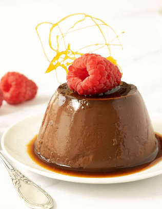

Chocolate Pudding

What are puddings?
Pudding is a sweet, jello-like, and delicate dessert food, that is usually
eaten cold.
Ingredients:
- 1 cup sugar
- 1/2 cup baking cocoa
- 1/4 cup cornstarch
- 1/2 teaspoon salt
- 4 cups whole milk
- 2 tablespoons butter
- 2 teaspoons vanilla extract
Recipe:
- In a heavy saucepan, combine sugar, cocoa, cornstarch and salt.
- Gradually add milk.
- Bring to a boil over medium heat; boil and stir for 2 minutes.
- Remove from the heat; stir in butter and vanilla.
- Spoon into individual serving dishes. Chill until serving.
- Add any extra toppings (Optional)
- Enjoy!